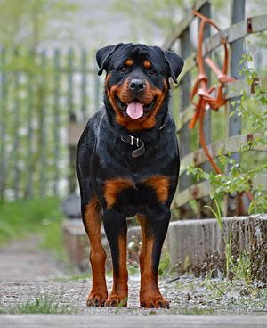

Biệt hiệu Rott
Rottie
Nguồn gốc Đức
Đặc điểm
Nặng Đực 50–60 kg (110–130 lb)
Cái 35–48 kg (77–106 lb)
Cao Đực 61–69 cm (24–27 in)
Cái 56–63 cm (22–25 in)
Màu Đen hoặc nâu đen
Tuổi thọ 8–10 năm
Rottweiler hay còn gọi là rốt, rotti là một giống chó có nguồn gốc ở Đức được dùng như loại chó chăn gia súc nhưng thường được huấn luyện để trở thành chó nghiệp vụ. Chúng còn là những con chó chiến đấu và có khả năng chịu đựng được các vết thương. Rottweiler còn là loài chó khoẻ mạnh, thông minh. Dù trông vẻ ngoài dữ dẵn nhưng chúng biết nghe lời và là những người bảo vệ tốt. Chúng ít thân thiện với người lạ nhưng với người quen lại tỏ ra dễ mến. Nhìn chung, Rottweilers là một giống chó mạnh mẽ với thói quen sống bầy đàn và bản năng bảo vệ. Hành vi nguy hiểm tiềm tàng trong Rottweilers thường do sự vô trách nhiệm, lạm dụng, bỏ bê, thiếu huấn luyện của con người. Tuy nhiên, sức mạnh của Rottweiler không nên bỏ qua vì chúng là một trong những giống chó nguy hiểm, lực cắn của chúng có thể lên đến 136 kg. Rottweiler là một giống chó khá phổ biến nhưng giá bán của nó lại lên đến 7.000 USD đối với mỗi con

Đặc điểm nổi bật của giống chó này là tầm vóc lớn, có hình dáng cân đối và vững chắc. Cao trung bình chung từ 58 – 68 cm, nặng từ 42 – 50 kg. Rottweiler có thân hình to lớn và mạnh mẽ. Hệ cơ bắp chúng phát triển rất tốt, tuy vậy không ảnh hưởng đến tính nhanh nhẹn của chúng. Chúng có chiều cao từ 24 - 27 inches (61 – 69 cm), chó cái cao từ 22 – 25 inches (56–63 cm). Chúng cân nặng từ 95 - 130 pounds (43 – 59 kg), chó cái nặng từ 85 – 115 pounds (38 – 52 kg). Chiều dài thân, tính từ xương ức đến xương ụ ngồi không vượt quá chiều cao tính đến vai, nhiều nhất là 15%.
Đầu của nó có dạng hình cầu, khoảng cách giữa hai tai lớn, mõm to bè. Mắt có màu nâu đen rất linh hoạt, có đốm vàng ở gò má trên mắt, mõm, bốn chân. Đầu chúng to và nặng. Trán tròn, cổ có chiều dài trung bình, rất cơ bắp, hơi cong, không có phần da bùng nhùng dưới cổ. Hàm rất phát triển và rất khoẻ, cộng với hàm răng khoẻ và sắc bén, hàm trên và hàm dưới rộng và khỏe, bộ răng hoàn chỉnh gồm 42 răng, mặt cắt kéo, răng cửa hàm trên gối lên hàm dưới.